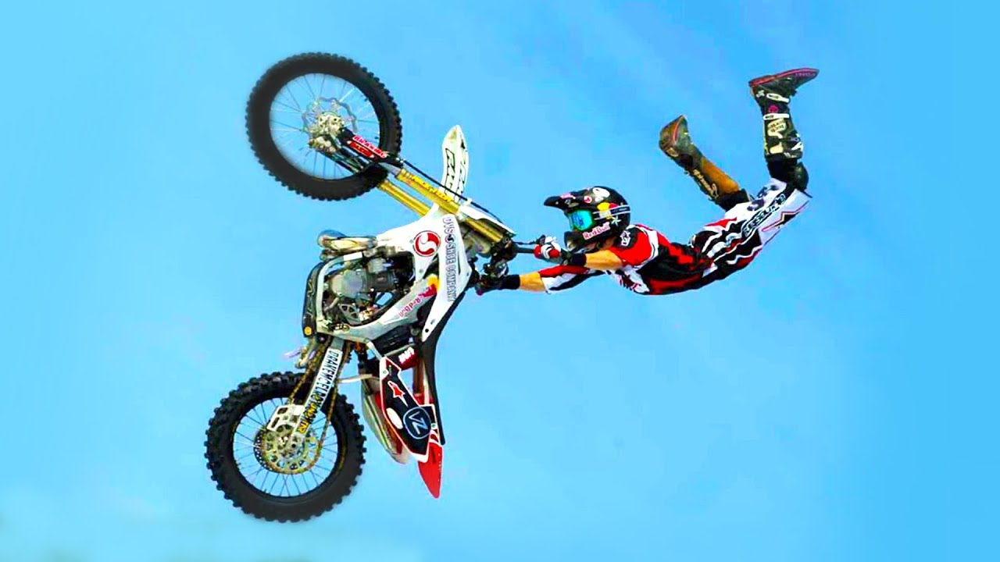

El motociclismo estilo libre o freestyle es una modalidad del motociclismo en la que los competidores deben tomar saltos, realizar acrobacias en el aire y aterrizar prolijamente. Se realiza con motocicletas de motocross (motocross estilo libre; en inglés: free motocross extreme. abreviado FMX o cuatrimotos, (incorrectamente llamado freestyle) en cuyo caso se disputa sobre tierra y arena; y con motonieves, en cuyo caso la superficie es nieve.
La principal competencia anual de motociclismo estilo libre son los X Games de verano (motocross) e invierno (motonieve). Red Bull X-Fighters es una serie de torneos de motocross estilo libre que recorre el mundo y atrae a los mayores exponentes de la disciplina. La Federación Internacional de Motociclismo posee su propio torneo, el Campeonato Mundial de Motocross Estilo Libre.
Existen tres formatos de disputa de motocross estilo libre. En sesiones, en las que cada competidor dispone de un período de tiempo para recorrer un campo lleno de saltos de distinto tipo y realizar varios trucos. En mejor truco consiste, cada competidor pasa por una serie de saltos (entre uno y tres) e intenta realizar los mejores trucos. En ambos casos, un jurado determina el puntaje en función de la complejidad, la novedad, la variedad, la extensión y la prolijidad. En Speed & Style ("velocidad y estilo"), dos competidores se enfrentan en un circuito doble, uno con saltos y el otro sin ellos. Cada competidor recibe puntos por sus trucos, y al ganador de la carrera se le suma la diferencia de tiempo a su puntaje. Quien logra la mayor puntuación gana la competición. Estas competiciones suelen durar cerca de dos horas y pueden combinarse con bmx.
Los motores de las motocicletas no necesitan una preparación excesiva para ser competitivos. El énfasis en una buena motocicleta de estilo libre radica en su ligereza y en el funcionamiento de la suspensión. Los manillares suelen ser menos anchos, para poder colocar las piernas por encima más fácilmente. Es común que por delante del manillar lleven levas (unas paletas rígidas), que sirven para contener sus manos y evitar que se alejen del manillar cuando el motociclista aleja su cuerpo del carenado.

En sus inicios, el motocross estilo libre se limitaba a mover piernas y brazos al tomar saltos. Poco a poco, varios trucos de BMX se pudieron lograr sobre motocicletas. La primera voltereta hacia atrás la logró Bob Kohl en el año 1993 sobre una Honda de 800 cc. En 2000, Carey Hart intentó realizar el truco en una motocicleta de cilindrada normal en los Gravity Games. Hart completó el giro y se cayó inmediatamente, dejando la duda de si había completado exitosamente la voltereta.
Hart y Travis Pastrana continuaron intentando realizar el truco los siguientes meses en distintas competencias y con distintas rampas, tanto de estilo libre como de salto alto motociclístico. Caleb Wyatt realizó la primera voltereta hacia atrás con aterrizaje perfecto en abril de 2002. Ese mismo año, Pastrana y Mike Metzger lograron el truco en los X Games. Al truco se le agregaron figuras como despegar manos y pies de la motocicleta.
En 2006, Pastrana realizó una voltereta doble hacia atrás en su programa de televisión Nitro Circus y luego en los X Games. Jim Dechamp falló al intentar una voltereta hacia adelante en los X Games de 2008. Luego de recuperarse de las fracturas que le causó la caída, Dechamp completó el truco en Nitro Circus.
En la actualidad se están incorporando los quads al estilo libre.